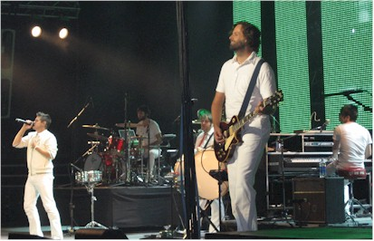
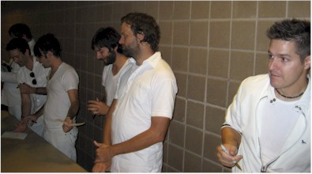
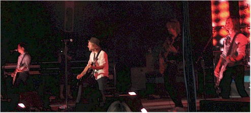
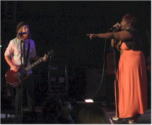
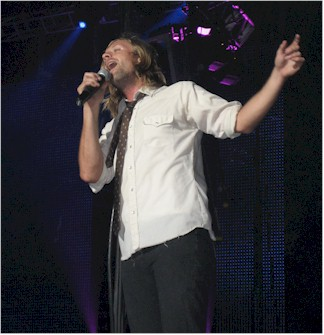
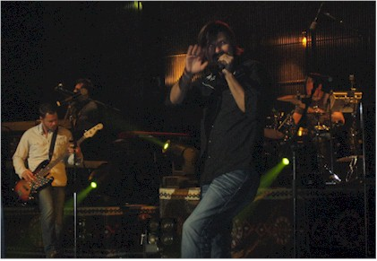
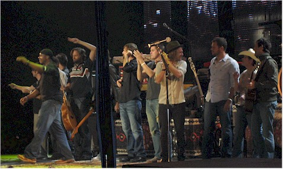

October 5, 2008
| I LOVE the band "Jars of Clay."
They are one of my absolute favorite bands. The iTunes Original
version of their song, "Frail" is my favorite song. I was
very excited when I heard they were coming to town. I had a really
great night at this concert. |
|
 |
 |
| Here you can see how great my seat was. | Jars of Clay greeted fans and signed autographs afterward. |
|
 This was Switchfoot. The lead singer of this band was such a kind and considerate guy that it has made me more of a fan of this band. |
|
|
This was Robert Randolph's sister |
 |
 |
 |
| Jon Foreman, up close. He even went out all through the crowd during one song. |
Mac Powell and some of the guys from Third Day, I've seen them many times in concert and they are always great. |
|
 All four bands: Robert Randolph, Jars of Clay,
Switchfoot, and Third Day |
|